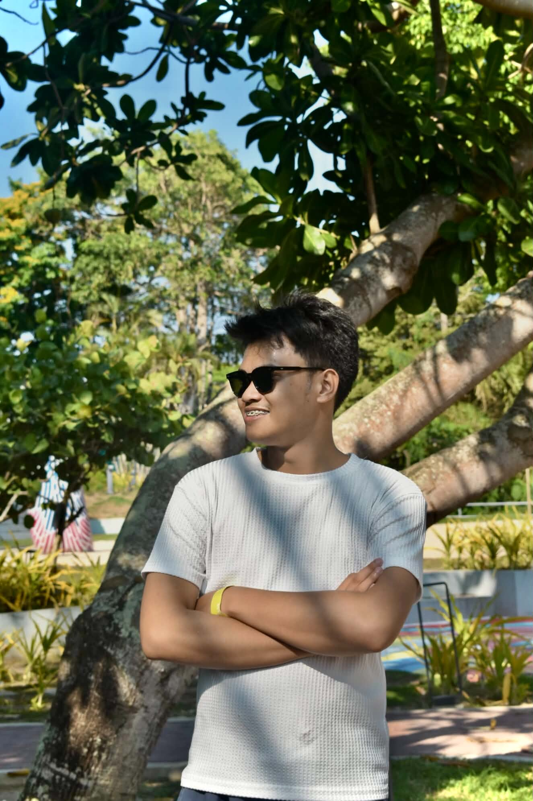
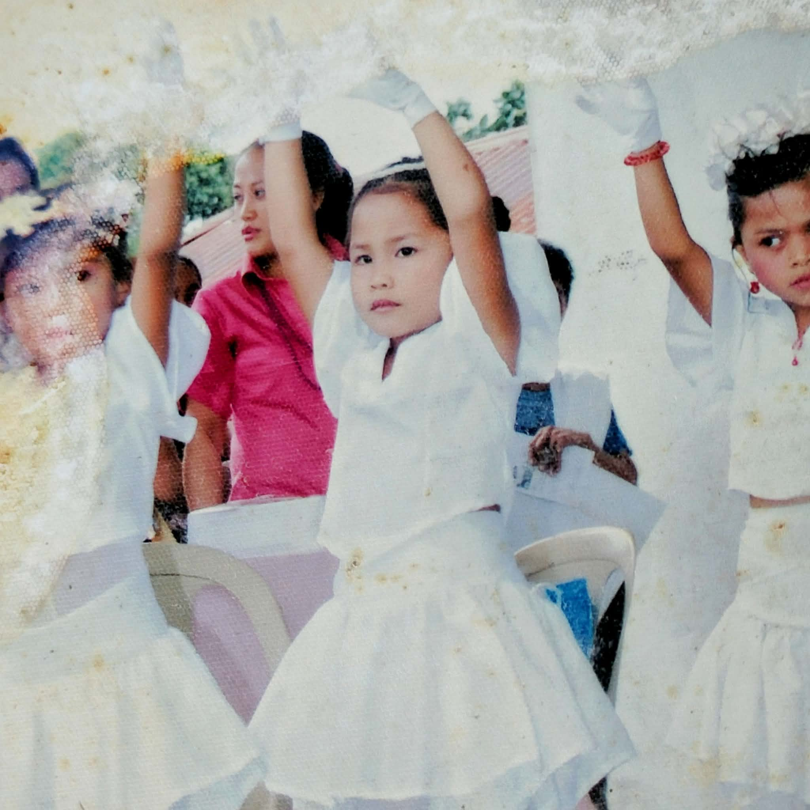
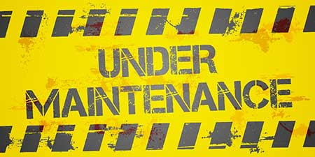

♡Your favorite photo of me
A photo that is your wallpaper in your Cellphone.
A little corner of the internet, just for you
HAPPY MONTHSARY, MY LOVE
If I could choose all over again, I would still choose you.
There's something for you ♡scroll slowly, baby ↓
A letter from my heart
Happy monthsary, Baby ko! ♡
Hi, Baby ko! Another month with you, Baby. ♡ I know madami na tayong mga napagdaanan, tampuhan, saka inis, but those things only make us stronger.
I just want to tell you, Baby, na don't be too pressured sa life, lalo na sa relationship natin. I know na gusto mo na akong ipakilala kila Tita and naghahanap ka lang ng tamang oras. Don't worry about it muna, Baby. It doesn't mean naman na iiwan kita dahil hindi mo pa ako napapakilala. I understand it, Baba, and I hear you. Take your time, Baby. We don't have to rush everything. ♡
Baby, mahal na mahal kita. There are times na nagkukulang ako sa actions ko or sa effort ko, but trust me, Baby, I'm doing my best para sa atin and para sa future nating dalawa. I know, Baby, na mahirap yung setup natin sa ngayon, pero huwag tayong susuko. Someday, this will become one of our unique love stories na ikukuwento natin sa isa't isa kapag kasal na tayo.
Baby, Baba, Lablab, and Love — kahit ano pa 'yang tawag ko sa'yo, Baby, the only thing that matters is the love I have for you. You will always be my favorite person, my comfort, and the person I want to share my future with. ♡
Huwag mong isipin na iiwan kita dahil lang nagtampo ka, or may tampuhan tayo sa isa't isa. I will never do that just because we're having a difficult day. I know that misunderstandings are part of a relationship, and I believe that learning to understand each other makes our relationship better and stronger.
Babyyy, I will support you even through the days when you're unsure of yourself. I will always be your number one supporter, cheering for you through every challenge and every achievement. I will be here to remind you of how capable you are, especially on the days when you forget it yourself.
One thing I truly wish for you is that all your dreams come true, Baby, especially your dream of becoming a teacher. I hope you achieve everything you've been working so hard for. I want to see you grow, succeed, and become the person you've always dreamed of being. And when you finally achieve those dreams, I hope I'm right there beside you, celebrating every little and big victory. ♡
And Baby, I also have a dream of my own. My dream is to have a complete and loving family with you as my wife. I dream of the day when I can call you my wife, wake up beside you, build our own home, share our happiness, overcome life's challenges together, and grow old with you.
I know that we still have a lot to learn and experience, and our journey isn't always going to be easy. But I want you to know that you're the person I want to keep choosing, not just today or this month, but in all the months and years that are still waiting for us.
Thank you for staying, for loving me, and for being part of my life. Thank you for being my Baby, my Baba, my Lablab, and my Love. Whatever life brings us, I hope we continue to communicate, understand each other, forgive each other, and choose our love every single day.
I love you so, so much, Baby ko. More monthsaries, more memories, more kulit moments, more dreams to achieve, and hopefully, one day, more beautiful years together as husband and wife.
Always remember, Baby: you are loved, you are supported, and you are never alone in this journey. Your Baba is always rooting for you. I'm proud of you, and I believe in you. ♡
I LOVE YOU, BABYYY! MWAAPS! 😘💗
Always and forever yours,
Your Baba ♡
Little moments, big feelings
Replace these cards with your favorite photos and memories together.

♡A photo that is your wallpaper in your Cellphone.

✿One of my Favorite Picture of you Baby.

☾This is undermaintenance our Photo in December will fill this .
A small promise
I can't promise that every day will be perfect, but I promise to keep learning how to love you better, listen to you, understand you, and make room for us to grow together.